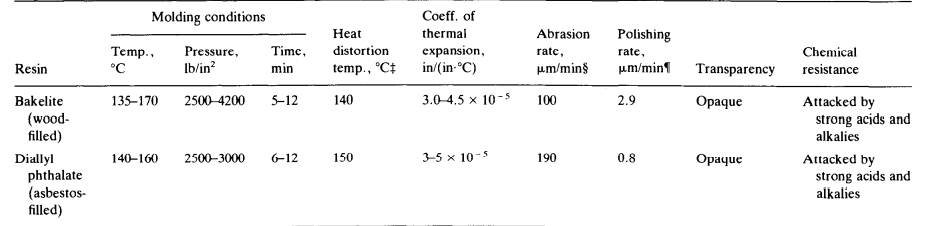
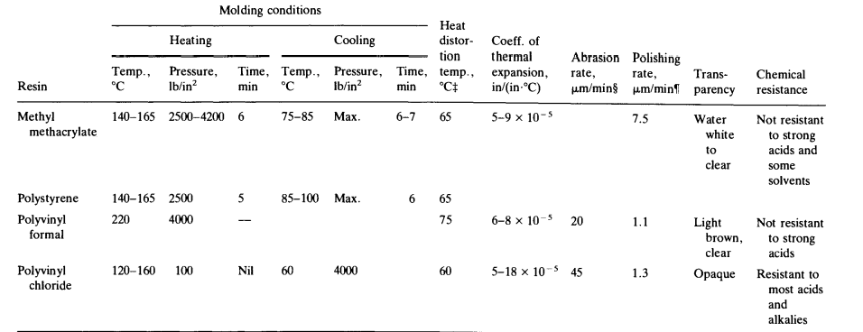

VIRTUAL
Labs

1) Methods available to mount specimens:
1) Hot mounting
2) Cold mounting
2) To describe the procedure of mounting specimens main functions:
1) Sharp corners are eliminated and maintains the principle of a materials surface features.
2) It fills voids in porous materials, and improves handling of irregularly shaped samples.
3) Maintains all samples are of a uniform size and shape so that is can be used in equipments for automatic preparation.
Methods available to mount specimens:
1 ) Hot mounting:
Hot mounting of specimens requires the resin to be heated and cooled under pressure. They are easier to produce and takes only several minutes. The resins are sold at cheaper price than cold mounting resins.
There are two resins available for hot mounting:
1) Thermosetting resins
2) Thermoplastic resins
Thermosetting resins:
Thermosetting resins cure at elevated temperatures and to avoid porous and non-uniformity, it is important that the pressure is always constant at right level. The resin undergoes cross-linking reactions until almost all of the molecules are cross-linked to form three-dimensional networks. After setting, thermoset resins cannot be melted again, and the shape cannot be changed. Examples include the very familiar phenolic plastic, Bakelite, diallyl phthalate, and the recently introduced epoxies such as Plastimet or Epomet.
Typical properties of thermosetting molding resins:
Data : George F Vander Voort, Metallography: Principles and Practice
Thermoplastic resins:
Thermoplastic resins soften at elevated temperatures and solidify again on cooling as no chemical bonding takes place. This characteristic allows thermoplastics to be remolded and recycled without negatively affecting the material’s physical properties. Examples include transparent methyl methacrylate (known as Lucite or Transoptic), polystyrene, polyvinyl chloride (PVC), and polyvinyl formal (Formvar)
:
Typical properties of thermoplastic molding resins:

Data : George F Vander Voort, Metallography: Principles and Practice
2) Cold mounting:
Cold mounting of specimens are preferred for specimens that are sensitive to the heat or pressure. After encasing the sample, a catalyst is used to cure and harden the material. This method is best for laboratories with a small throughput but large quantities of samples and is necessary for porous, brittle, or heat-sensitive samples. Once mounted, samples can be more easily handled by other metallographic instruments and maintain the integrity of the sample’s edges.
There are three types of cold mounting namely:
1) Epoxy systems
2) Acrylics systems
3) Polyesters systems
1)Epoxy systems
Epoxy resins are suitable for mounting of all types of materials and are especially recommended for vacuum impregnation. Epoxies have the lowest shrinkage of all cold-mounting resins. The curing time is relatively long, but adhesion to most materials is excellent. Properties such as low vapor pressure, transparency, good adhesion, low viscosity, and no shrinkage are all specific to epoxies.
2) Acrylics systems
Acrylics are easy-to-use resins with short curing times, very limited shrinkage, and excellent mounting properties. They are well-suited for both serial mounting of irregularly shaped specimens and for routine work or single specimens.When mixing acrylic resins, it is recommended to add powder to the liquid (hardener) – this will result in the most uniform resin mixture.
3) Polyesters systems
Polyesters are an economical choice for labs with low sample volume and less concern about specimen edge retention. They provide an excellent way to make a mount quickly and easily. Their hardened specimen is duroplastic.